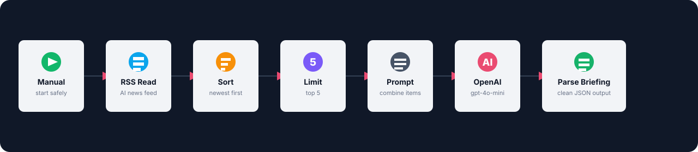

Workflow Shape

Start n8n
Copy the env template, add your OpenAI key, then start n8n:
cp .env.example .env
docker compose up -dOpen:
http://localhost:5678Import And Run
- Open n8n.
- Choose Workflows then Import from File.
- Select
ai_news_briefing_workflow.json. - Click Test workflow.
- Open the final Parse AI Briefing node output.
Secret Handling
The workflow JSON contains this expression, not a real key:
Bearer {{ $env.OPENAI_API_KEY }}Put the real value in
.env or n8n credentials. Never put real API keys in exported workflows, GitHub, screenshots, or frontend code.What People Learn
- How to pass secrets into n8n with environment variables.
- How to combine multiple RSS items into one model prompt.
- How to ask OpenAI for JSON with
response_format. - How to parse model output into a clean workflow result.
- How to keep token use controlled by limiting items before the LLM call.